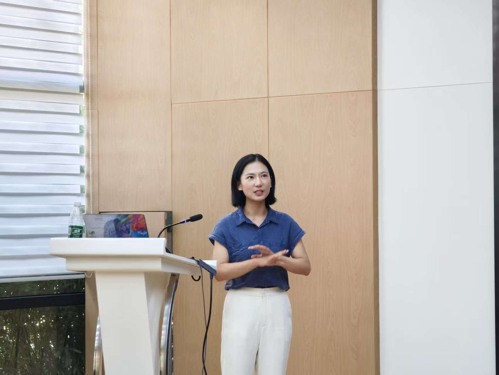
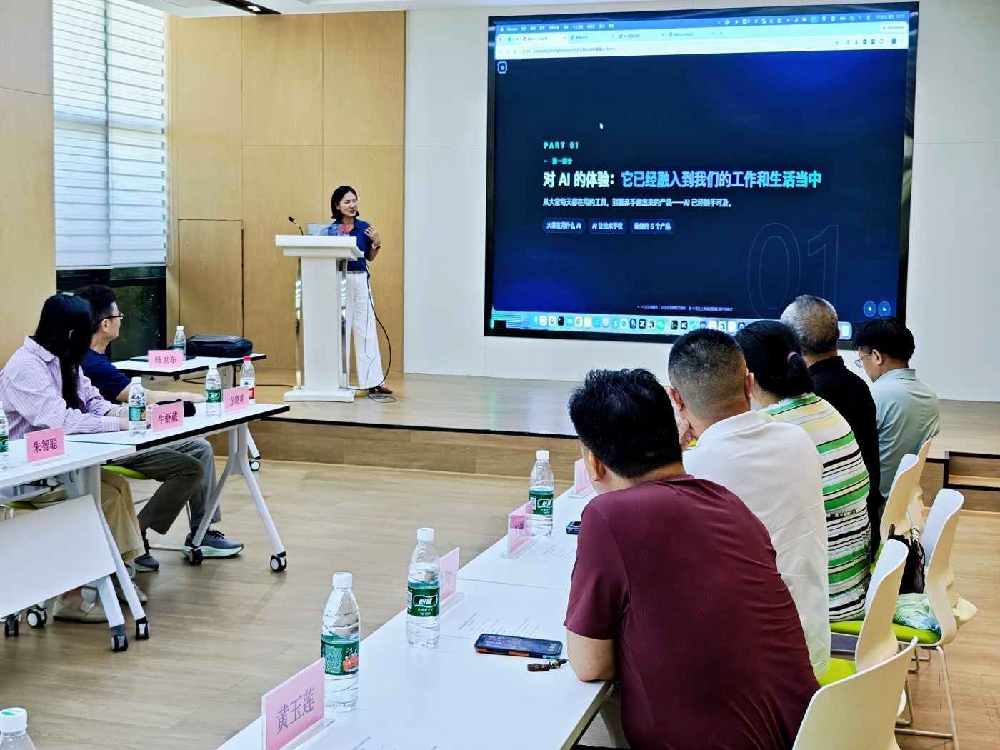
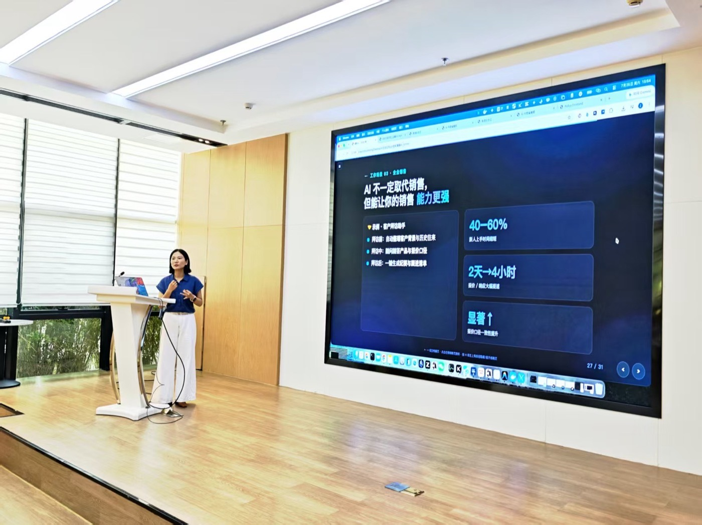

ZERO ZHU
About · 关于
认识一下就好
核心几句就好：在做什么，从哪来，能帮你什么。

ZERO ZHU · 朱智聪
做企业 AI 转型落地（FDE），也是 AI 自媒体博主。
帮企业把 AI 真正落到业务里：从场景选型、流程改造到团队能用起来；同时写文章、做内容，把复杂的事讲清楚。口头禅也是站的方向：工作交给 AI，生活留给自己。
石河子大学金融学本科，中国科学技术大学管理学硕士。先在金融行业工作约 4 年，习惯用业务、风险与结果说话；后做管理咨询约 7 年，长期练的是拆问题、对齐多方、把方案推进到落地。现在做 FDE，把这两段经验接在企业 AI 转型上——不只介绍工具，更帮团队把 AI 嵌进真实流程，变成可复用的工作能力。
企业家交流会
近 20 位负责人 · AI 复盘

上周六我组织了一场 AI 交流会，来了之后的反应让我意外
创业后我把自己关了起来：研究模型、做工具、测场景。直到那场交流会，我决定「打开」——来了近 20 位企业家和企业负责人。原本只是小范围分享，现场反应远超预期。
现场我展示了什么
结合自己的创业实践，演示了大模型在三个场景里的落地：
- 内容创作：从选题到成稿，AI 如何辅助高质量内容，而不是正确的废话。
- 知识管理：把散落信息整理成可检索知识体系，让团队积累不再流失。
- 经营分析：把业务数据喂给 AI，发现凭直觉看不到的趋势和问题。
这三件事对应企业最核心的：获客、沉淀、决策。
AI 已不再是遥远的概念，而是可落地、可量化、可复用的真实生产力。
四个行业的真实洞察
- 法律：检索与案例工作量可减少约三分之二，但最终判断仍靠人。
- 国际贸易：「用 AI 要从人开始到人结束」——安全与把关不可替代。
- 金融：核心不是要不要用，而是在合规框架里怎么用好。
- 开发：效率可提升数倍，但关键仍是 Human in the loop——AI 是放大器，不是替代品。
最让我感慨的是：人和人之间，AI 使用水平的差距，比想象中大得多。差距不在工具，在认知——知不知道 AI 能做什么，有没有把工作流拆开，交给它该交的部分。
AI 工具公开培训
职场实操课

我组织了一场关于 AI 工具使用的公开培训
面向职场工作人员的公开课。朋友说我学了 AI 这么久，却从没给他们培训过——于是把范围扩大，发了几天海报，现场来了十几位。
最打动我的是一位七十多岁、带我做过项目的老专家，特地带电脑早早到场。他说企业要尽早部署 AI 工作流。
我在现场交付的能力
- 讲清边界：讲清 AI 能做什么、不能做什么。
- 对齐场景：按打工人真实工作流拆解。
- 工具化落地：讲「Harness 工程」与智能体工具箱，再带练「小说创作工作台」。
- 按听众备课：企业家场偏经营场景，职场场偏实操技巧。
结束后有人说「干货满满」。只凭海报就信任并大老远赶来的人，我必须让他们有收获。